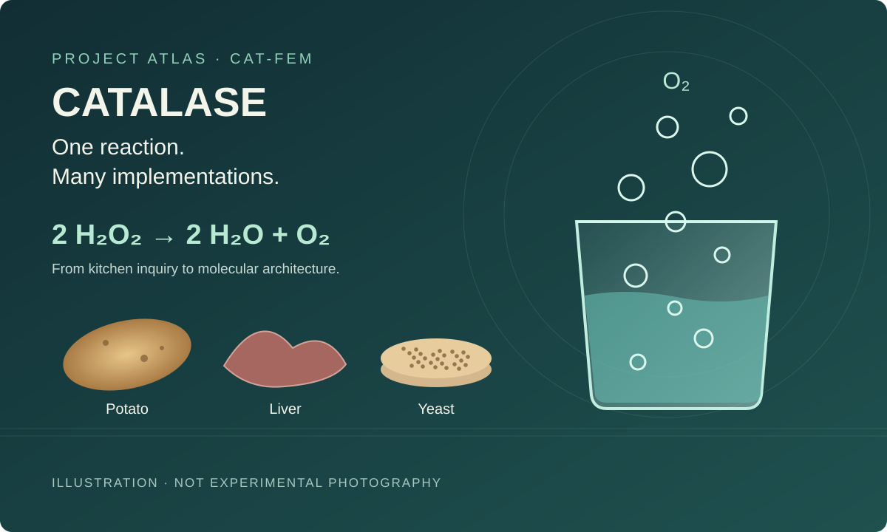
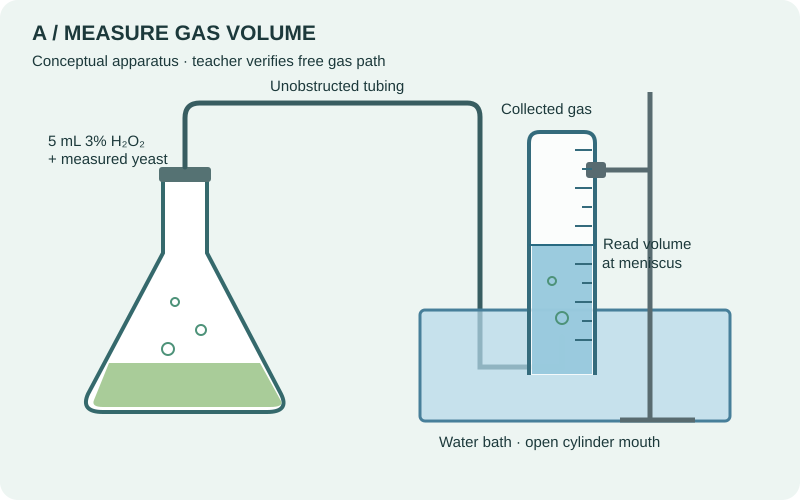
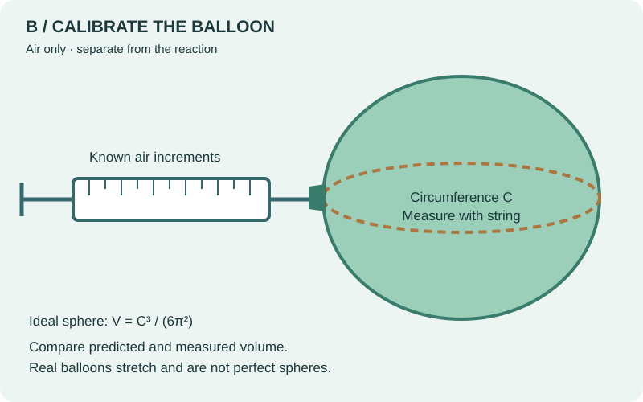

Teacher guide
6 pages · preparation, safe apparatus, controls and assessment.
Download pending release verification.
Kitchen Inquiry Lab · Research & scholarship
From a potato and a bottle of peroxide to a question about the continuity of biological function across evolutionary time.
Randall S. Young, Ed.S. · CAT-FEM v0.1 · Research preview
2 H₂O₂ → 2 H₂O + O₂

Open laboratory / Classroom edition 1.1
Measure a living system. Calibrate an instrument. Explain the data. Then follow the same biochemical question into C2G Paper 2.
6 pages · preparation, safe apparatus, controls and assessment.
Download pending release verification.
5 pages · predictions, measurement tables and inquiry.
Download pending release verification.
10 pages · stoichiometry, kinetics, statistics, geometry and evolution.
Download pending release verification.
Complete package (21 PDF pages, Python and CSV templates): pending checksum-verified distribution.

Compare yeast quantities, controls and time series with 5 mL of household 3% peroxide per trial. No pressure buildup, no flames; teacher checks unobstructed gas path before use.

Known air volumes, measured circumference, spherical model V = C³/(6π²), and the chain rule. The balloon is not connected to the chemical reaction.

View classroom apparatus photographs showing an inverted measuring cylinder, water trough and clamp. Photo reference only: that site's protocol uses stronger peroxide and a flame test; do not follow it for this lab.
University of Minnesota Science for All shows students investigating yeast, potatoes and balloons. Atlas uses a separate air-only balloon calibration; follow the Atlas safety instructions rather than copying the photographed apparatus.
The diagrams depict the proposed Atlas instruments. External photographs are examples of related experiments, not evidence that the Atlas setup has been bench validated. Original Atlas photographs are a future addition after the first physical trial.
01 / Experience before equation
In November 2024, the Kitchen Inquiry Lab explored how potato, liver and baker's yeast could reveal catalase activity through oxygen production. The inquiry progressed from visible bubbling to quantitative measurement, temperature effects and a proposed gas-collection apparatus. Red cabbage was also discussed as a possible source, and separately as a pH indicator; it is not a verified catalase result.
13 November: proposed household enzyme activity with raw and heat-treated material. 21 November: enzyme structure, evolution and a proposed temperature study. 23 November: inexpensive measurement of actual oxygen volume. These are recovered design discussions, not a record of completed wet-lab trials.
02 / A classroom investigation
Start with small samples of raw potato and baker's yeast, equal volumes of household 3% hydrogen peroxide, and an open container. Compare with peroxide alone and a cooled, heat-treated sample. Optional liver is a teacher-supervised biological material; avoid raw-tissue handling in student activities.
Observe bubbles and record time, sample mass, temperature and foam height at regular intervals. Repeat trials with equal conditions.
Plot the proxy signal against time. Compare slopes and repeatability. Foam height is not a direct measure of gas volume or intrinsic catalytic activity.
Record raw observations, controls, units, uncertainty and limitations. An appropriately designed freely vented gas-collection setup can measure volume in a supervised lab.
Safety: Use only small amounts of household 3% peroxide with eye protection and adult/teacher supervision. Never seal the reaction, obstruct its gas outlet, or use a rigid closed vessel. Do not ingest the materials or mix with cleaning chemicals. Keep oxygen-producing reactions away from flames. This is a proposed classroom investigation; no measured Atlas trial is claimed.
03 / Published biochemical evidence
Our exploratory secondary analysis uses published measurements of 16 purified typical heme catalases from Switala and Loewen (2002). Their common reaction does not imply equivalent performance or cell protection.
| Measured property | Minimum | Maximum |
|---|---|---|
| Specific activity (U/mg) | 20,700 | 273,800 |
| Observed maximum per heme per second | 54,000 | 833,000 |
| Concentration at half observed maximum (mM) | 38 | 599 |
| Time to half inactivation at 65°C (min) | 0.05 | 720 |
Thousands of hydrogen peroxide molecules per heme per second; selected observations from the published 16-enzyme panel. Not a ranking of biological fitness.
Source: Switala & Loewen, Diversity of properties among catalases (2002), tables 2, 3 and 5; ranges calculated in CAT-FEM. A separate 2021 study of five catalase paralogs from Streptomyces rimosus reports a 9.45-fold range of specific activities. Assay conditions differ; the cohorts are not pooled.
04 / Circuits to Genomes
The PDP-8 motivates an analogy: preserve an identifiable operation while changing its implementation. Catalase offers a biochemical benchmark; primate enhancers remain a more context-dependent regulatory investigation. The phenomenon of catalase conservation is already known. Our proposed contribution is to test whether structural features add predictive information beyond sequence and phylogenetic baselines.
Our small, retrospective clade-based prediction has mixed results; independent validation, sequence matching and structural analysis remain pending. No new evolutionary mechanism or proof of molecular functional equivalence is claimed. Paper 2 has been refocused on hydrogen peroxide management; the original primate enhancer manuscripts remain preserved as a separate companion study.
Explore the three-paper C2G project · Read the complete pilot and proposed validation protocol
05 / Reproduce and extend
Status: classroom design recovered; published data reanalysis exploratory; no recorded Atlas wet-lab result or independently validated architectural predictor. Updated 27 November 2026.